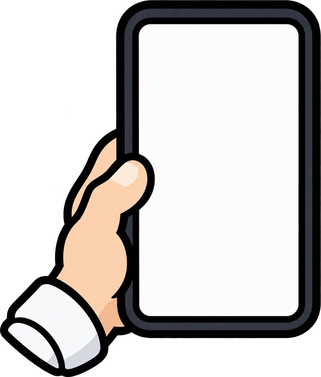
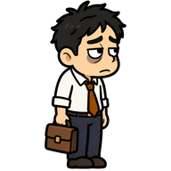
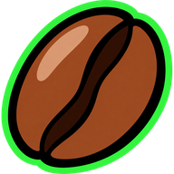
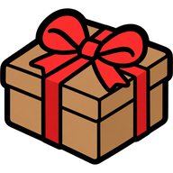
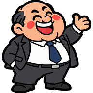
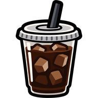

보스 등장
Esc = 건너뛰기

퇴근하겠습니다
게임 설명

이동W A S D 또는 방향키로 움직입니다. 공격은 자동으로 나가므로 피하는 데만 집중하면 됩니다.

레벨 업쓰러뜨린 업무가 떨어뜨린 커피콩을 모아 레벨을 올리고, 카드 중 하나를 골라 무기·아이템을 강화합니다. 무기와 아이템은 각각 4개까지 가질 수 있습니다.

간식 상자1분마다 나오는 금색 고리의 엘리트를 잡으면 상자가 떨어집니다. 무기와 짝 아이템을 최대 레벨로 올린 채 열면 무기가 진화합니다.

퇴근5층에서 1층까지 내려갑니다. 층마다 길을 막는 물건과 규칙이 다릅니다. 레벨을 올리면 층 보스가 나오고, 보스를 잡으면 비상계단 문이 열립니다. 1층 로비의 부장님을 잡으면 퇴근합니다.

바닥 아이템아이스 아메리카노는 체력을 채우고, 자석은 커피콩을 모두 끌어옵니다. 정전은 화면 안의 적을 없애고, 점심시간은 적을 잠시 멈춥니다. 3층 믹스커피를 마시면 잠깐 빨라집니다.
도움말게임 중 H 키나 왼쪽 위 ? 버튼으로 무기 조합표와 설명을 볼 수 있습니다. Esc 키나 ? 버튼 옆의 일시정지 버튼을 누르면 일시정지됩니다.
그림: AI 생성 (gpt-image) · 일부 Kenney (CC0)